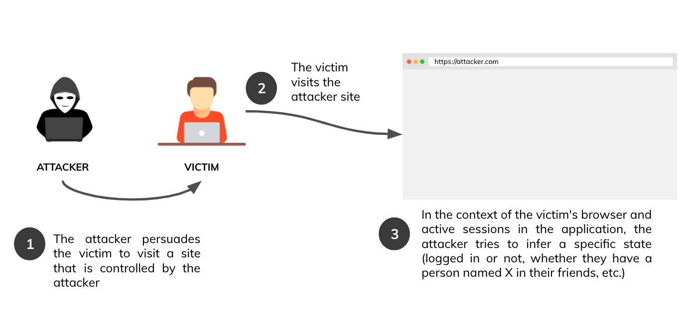
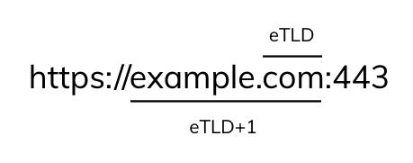
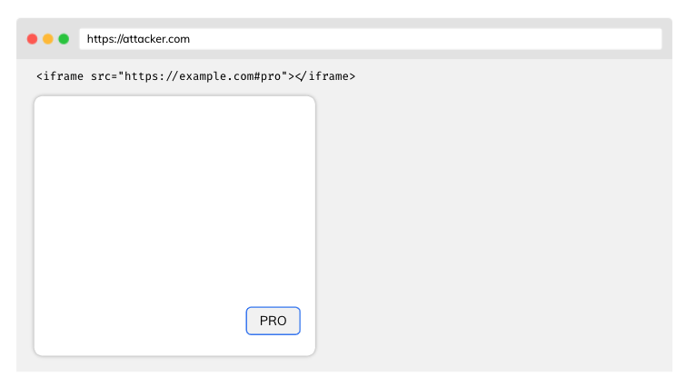
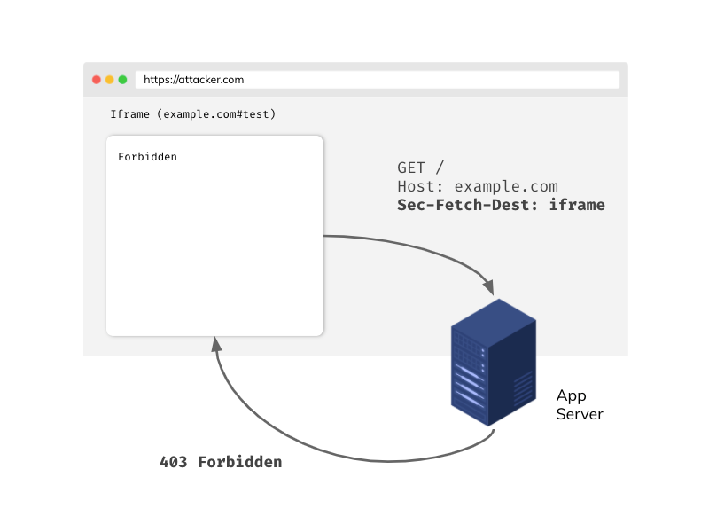
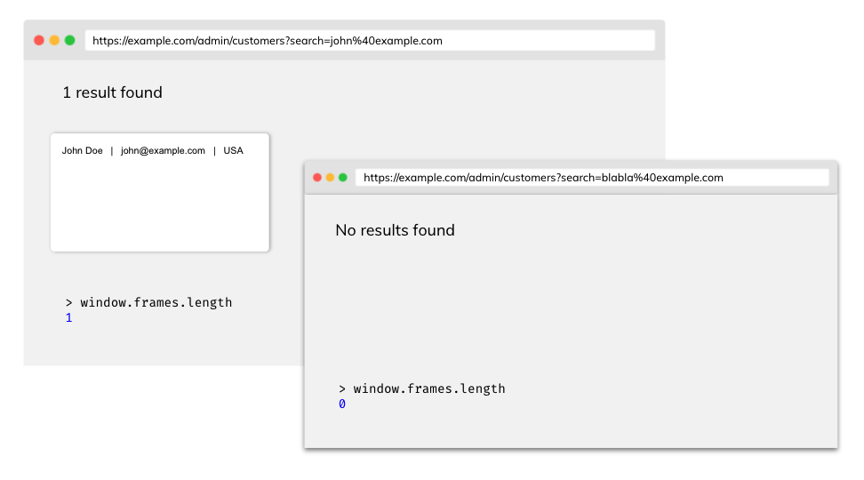
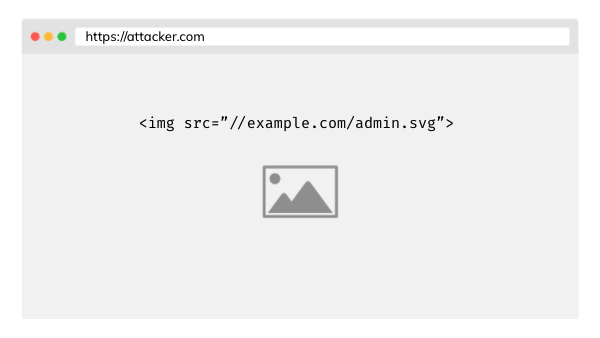

Cross-site leaks Cheat Sheet¶
Introduction¶
This article describes examples of attacks and defenses against cross-site leaks vulnerability (XS Leaks). Since this vulnerability is based on the core mechanism of modern web browsers, it's also called a browser side-channel attack. XS-Leaks attacks seek to exploit the fact of seemingly insignificant information that is exchanged in cross-site communications between sites. This information infers answers to the previously asked questions about the victim's user account. Please take a look at the examples provided below:
- Is the user currently logged in?
- Is the user ID 1337?
- Is the user an administrator?
- Does the user have a person with a particular email address in their contact list?
On the basis of such questions, the attacker might try to deduce the answers, depending on the application's context. In most cases, the answers will be in binary form (yes or no). The impact of this vulnerability depends strongly on the application's risk profile. Despite this, XS Leaks may pose a real threat to user privacy and anonymity.
Attack vector¶

- The entire attack takes place on the victim's browser side - just like an XSS attack
- In some cases, the victim must remain on the attacker's site longer for the attack to succeed.
Same Origin Policy (SOP)¶
Before describing attacks, it's good to understand one of the most critical security mechanisms in browsers - The Same-origin Policy. A few key aspects:
- Two URLs are considered as same-origin if their protocol, port, and host are the same
- Any origin can send a request to another source, but due to the Same-origin Policy, they will not be able to read the response directly
- Same Origin Policy may be relaxed by Cross Origin Resource Sharing (CORS).
| Origin A | Origin B | Same origin? |
|---|---|---|
https://example.com |
http://sub.example.com |
No, different hosts |
https://example.com |
https://example.com:443 |
Yes! Implicit port in Origin A |
Although the SOP principle protects us from accessing information in cross-origin communication, XS-Leaks attacks based on residual data can infer some information.
SameSite Cookies¶
The SameSite attribute of a cookie tells the browser whether it should include the cookie in the request from the other site. The SameSite attribute takes the following values:
None- the cookie will be attached to a request from another site, but it must be sent over a secure HTTPS channelLax- the cookie will be appended to the request from another page if the request method is GET and the request is made to top-level navigation (i.e. the navigation changes the address in the browser top bar)Strict- the cookie will never be sent from another site
It is worth mentioning here the attitude of Chromium based browsers in which cookies without SameSite attribute set by default are treated as Lax.
SameSite cookies are a strong defense-in-depth mechanism against some classes of XS Leaks and CSRF attacks, which can significantly reduce the attack surface, but may not completely cut them (see, e.g., window-based XS Leak attacks like frame counting and navigation).
How do we know that two sites are SameSite?¶

For SameSite cookies, a site consists of the scheme and the registrable domain (eTLD+1). The port is not part of the site. For example:
| Full URL | Site (scheme + eTLD+1) |
|---|---|
https://example.com:443/data?query=test |
https://example.com |
Why are we talking about eTLD+1 and not just TLD+1? It's because of domains like .github.io or .eu.org. Such parts are not atomic enough to be compared well. For this reason, a list of "effective" TLDs (eTLDs) was created and can be found here.
Sites with the same scheme and eTLD+1 are considered same-site. For example:
| Origin A | Origin B | SameSite? |
|---|---|---|
https://example.com |
http://example.com |
No, different schemes |
https://evil.net |
https://example.com |
No, different eTLD+1 |
https://sub.example.com |
https://data.example.com |
Yes, subdomains don't matter |
For more information about SameSite, see the excellent article Understanding "same-site".
Attacks using the element ID attribute¶
Elements in the DOM can have an ID attribute that is unique within the document. For example:
<button id="pro">Pro account</button>
The browser will automatically focus on an element with a given ID if we append a hash to the URL, e.g. https://example.com#pro. What's more, the JavaScript focus event gets fired. The attacker may try to embed the application in the iframe with specific source on its own controlled page:

then add listener in main document for blur event (the opposite of focus). When the victim visits the attackers site, the blur event gets fired. The attacker will be able to conclude that the victim has a pro account.
Defense¶
Framing protection¶
If you don't need other origins to embed your application in a frame, you can consider using one of two mechanisms:
- Content Security Policy
frame-ancestorsdirective. Read more about syntax. - X-Frame-Options - mainly if you want to support old browsers.
Setting up framing protection efficiently blocks the ability to embed your application in a frame on the attacker-controlled origin and protects from other attacks like Clickjacking.
Fetch metadata (Sec-Fetch-Dest)¶
Sec-Fetch-Dest header provides us with a piece of information about what is the end goal of the request. This header is included automatically by the browser and is one of the headers within the Fetch Metadata standard.
With Sec-Fetch-Dest you can build effective own resource isolation policies, for example:
app.get('/', (req, res) => {
if (req.get('Sec-Fetch-Dest') === 'iframe') {
return res.sendStatus(403);
}
res.send({
message: 'Hello!'
});
});

If you want to use headers from the Fetch Metadata standard, make sure that your users' browsers support this standard (you can check it here). Also, think about using the appropriate fallback in code if the Sec-Fetch-* header is not included in the request.
Attacks based on error events¶
Embedding from resources from other origins is generally allowed. For example, you can embed an image from another origin or even script on your page. What is not permitted is reading cross-origin resource due the SOP policy.
When the browser sends a request for a resource, the server processes the request and decides on the response e.g. (200 OK or 404 NOT FOUND). The browser receives the HTTP response and based on that, the appropriate JavaScript event is fired (onload or onerror).
In this way, we can try to load resources and, based on the response status, infer whether they exist or not in the context of the logged-in victim. Let's look at the following situation:
GET /api/user/1234- 200 OK - currently logged-in user is 1234 because we successfully loaded resource (onload event fired)GET /api/user/1235- 401 Unauthorized - 1235 is not the ID of the currently logged in user (onerror event will be triggered)
Given the above example, an attacker can use JavaScript on his controlled origin to guess the victim's ID by enumerating over all the values in a simple loop.
function checkId(id) {
const script = document.createElement('script');
script.src = `https://example.com/api/users/${id}`;
script.onload = () => {
console.log(`Logged user id: ${id}`);
};
document.body.appendChild(script);
}
// Generate array [0, 1, ..., 40]
const ids = Array(41)
.fill()
.map((_, i) => i + 0);
for (const id of ids) {
checkId(id);
}
Note that the attacker here does not care about reading the response body even though it would not be able to due to solid isolation mechanisms in browsers such as Cross-Origin Resource Blocking. All it needs is the success information it receives when the onload event fires.
Defense¶
SubResource protection¶
In some cases, mechanism of special unique tokens may be implemented to protect our sensitive endpoints.
/api/users/1234?token=be930b8cfb5011eb9a030242ac130003
- Token should be long and unique
- The back-end must correctly validate the token passed in the request
Although it is pretty effective, the solution generates a significant overhead in proper implementation.
Fetch metadata (Sec-Fetch-Site)¶
This header specifies where the request was sent from, and it takes the following values:
cross-sitesame-originsame-sitenone- user directly reached the page
Like Sec-Fetch-Dest, this header is automatically appended by the browser to each request and is part of the Fetch Metadata standard. Example usage:
app.get('/api/users/:id', authorization, (req, res) => {
if (req.get('Sec-Fetch-Site') === 'cross-site') {
return res.sendStatus(403);
}
// ... more code
return res.send({ id: 1234, name: 'John', role: 'admin' });
});
Cross-Origin-Resource-Policy (CORP)¶
If the server returns this header with the appropriate value, the browser will not load resources from our site or origin (even static images) in another application. Possible values:
same-sitesame-origincross-origin
Read more about CORP here.
Attacks on postMessage communication¶
Sometimes in controlled situations we would like, despite SOP, to exchange information between different origins. We can use the postMessage mechanism. See below example:
// Origin: http://example.com
const site = new URLSearchParams(window.location.search).get('site'); // https://evil.com
const popup = window.open(site);
popup.postMessage('secret message!', '*');
// Origin: https://evil.com
window.addEventListener('message', e => {
alert(e.data) // secret message! - leak
});
Defense¶
Specify strict targetOrigin¶
To avoid situations like the one above, where an attacker manages to get the reference for a window to receive a message, always specify the exact targetOrigin in postMessage. Passing to the targetOrigin wildcard * causes any origin to receive the message.
// Origin: http://example.com
const site = new URLSearchParams(window.location.search).get('site'); // https://evil.com
const popup = window.open(site);
popup.postMessage('secret message!', 'https://sub.example.com');
// Origin: https://evil.com
window.addEventListener('message', e => {
alert(e.data) // no data!
});
Frame counting attacks¶
Information about the number of loaded frames in a window can be a source of leakage. Take for example an application that loads search results into a frame, if the results are empty then the frame does not appear.

An attacker can get information about the number of loaded frames in a window by counting the number of frames in a window.frames object.
So finally, an attacker can obtain the email list and, in a simple loop, open subsequent windows and count the number of frames. If the number of frames in the opened window is equal to 1, the email is in the client's database of the application used by the victim.
Defense¶
Cross-Origin-Opener-Policy (COOP)¶
Setting this header will prevent cross-origin documents from opening in the same browsing context group. This solution ensures that document A opening another document will not have access to the window object. Possible values:
unsafe-nonesame-origin-allow-popupssame-origin
In case the server returns for example same-origin COOP header, the attack fails:
const win = window.open('https://example.com/admin/customers?search=john%40example.com');
console.log(win.frames.length) // Cannot read property 'length' of null
Attacks using browser cache¶
Browser cache helps to significantly reduce the time it takes for a page to load when revisited. However, it can also pose a risk of information leakage. If an attacker is able to detect whether a resource was loaded from the cache after the load time, he will be able to draw some conclusions based on it.
The principle is simple, a resource loaded from cache memory will load incomparably faster than from the server.

An attacker can embed a resource on their site that is only accessible to a user with the admin role. Then, using JavaScript, read the load time of a particular resource and, based on this information, deduce whether the resource is in cache or not.
The example selects the first matching resource timing entry already recorded in the timeline. Set THRESHOLD for the measurement context; a short duration alone does not prove a cache hit.
// Illustrative timing threshold for this measurement context
// const THRESHOLD = ...
const adminImagePerfEntry = window.performance
.getEntriesByType('resource')
.find((entry) => entry.name.endsWith('admin.svg'));
if (adminImagePerfEntry && adminImagePerfEntry.duration < THRESHOLD) {
console.log('Possible cache hit (timing heuristic)');
}
Defense¶
Unpredictable tokens for images¶
This technique is accurate when the user wants the resources to still be cached, while an attacker will not be able to find out about it.
/avatars/admin.svg?token=be930b8cfb5011eb9a030242ac130003
- Tokens should be unique in context of each user
- If an attacker cannot guess this token, it will not be able to detect whether the resource was loaded from cache
Using the Cache-Control header¶
You can disable the cache mechanism if you accept the degraded performance related to the necessity of reloading resources from the server every time a user visits the site. To disable caching for resources you want to protect, set the response header Cache-Control: no-store.
Quick recommendations¶
- If your application uses cookies, make sure to set the appropriate SameSite attribute.
- Think about whether you really want to allow your application to be embedded in frames. If not, consider using the mechanisms described in the framing protection section.
- To strengthen the isolation of your application between other origins, use Cross Origin Resource Policy and Cross Origin Opener Policy headers with appropriate values.
- Use the headers available within Fetch Metadata to build your own resource isolation policy.